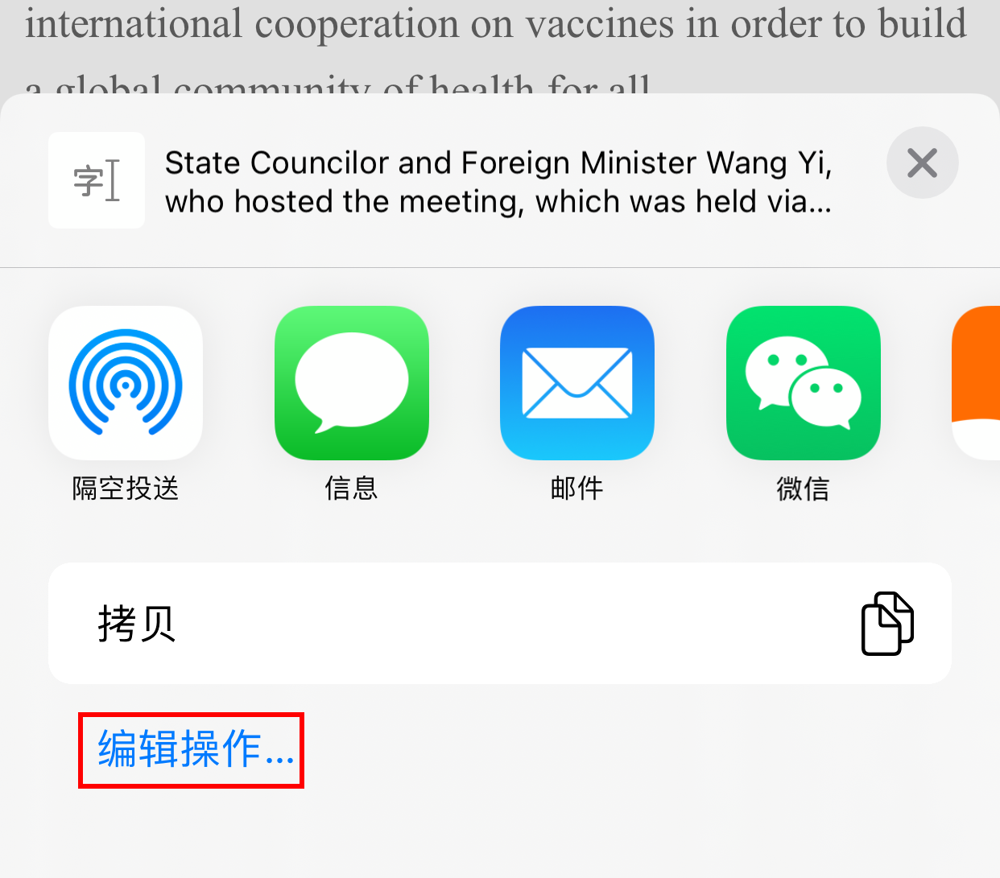
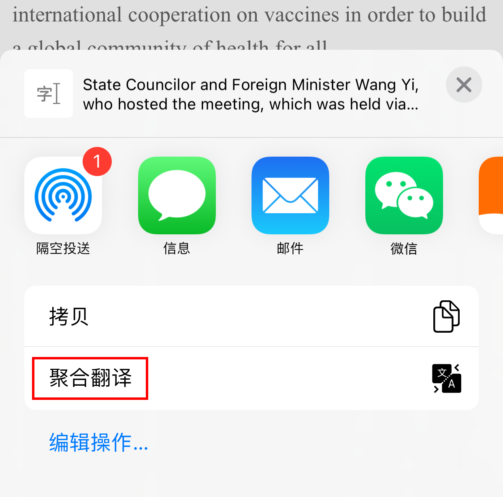

title: 如何跨App啟用聚合翻譯
在其他App中選中一段文字後，可快速查看翻譯，無需進行App切換。
使用步驟
- 長按選中要翻譯的文字，然後在選單中點擊「共亯…」
- 在彈出菜單中點擊「編輯操作…」

- 在操作頁面開啟「聚合翻譯」，點按左側加號，然後點按「完成」

- 在選單中點擊「聚合翻譯」即可查看翻譯

- 得到翻譯結果

在其他App中選中一段文字後，可快速查看翻譯，無需進行App切換。

